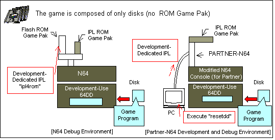
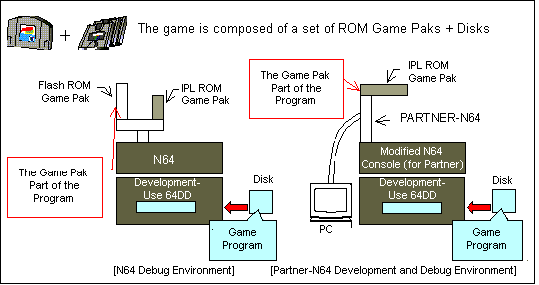

When a game is comprised only of disks, the IPL written in DDROM is used for booting the game from the disk. This is called a disk boot.
When debugging with the N64 Control Deck, the special development-use IPL (file name ipl4rom) is written to the flash cassette for use. When the program is developed with Partner-N64, resetdd is executed in the Partner-N64 command window in order to transfer the development-use IPL into emulation ROM.

If, on the other hand, the game is comprised of disks and a Game Pak, the ROM cartridge is booted first because it has priority. After that, data is read from the disk and possibly also written to the disk as the game progresses and the occasion demands. For a Game Pak boot, the application program is used instead of the special development-use IPL.
When debugging with the N64 Control Deck, the part of the game that is on the Game Pak is written to the flash cassette. When the program is developed with Partner-N64, the Game Pak part of the game is transferred to Partner-N64's emulation ROM and then executed.

Nintendo® Confidential
Copyright © 1999
Nintendo of America Inc. All Rights Reserved
Nintendo and N64 are registered trademarks of Nintendo
Last Updated March, 1999